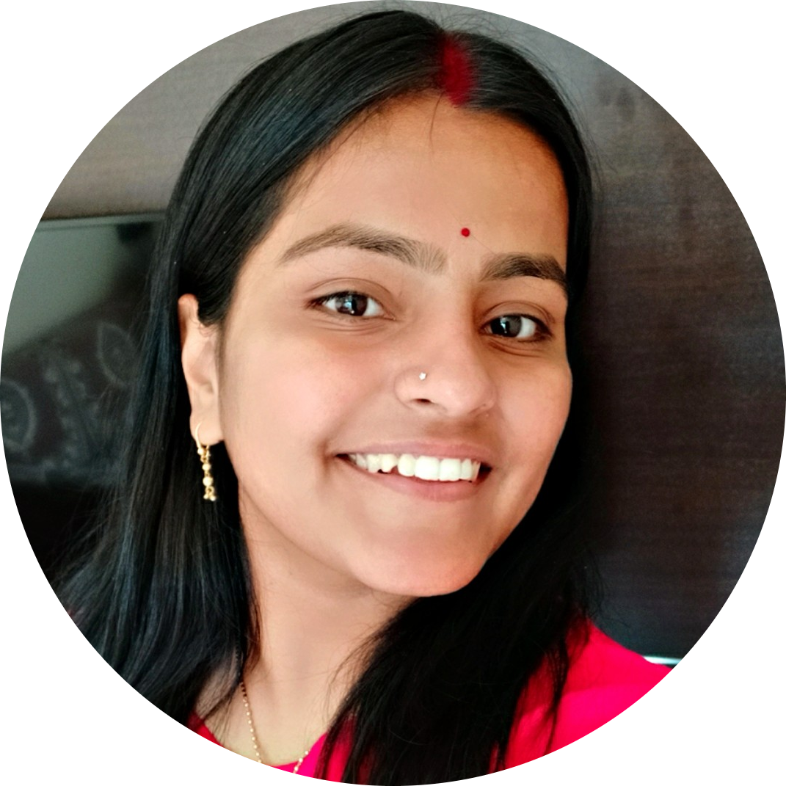

Hello.
I'm a Software Engineer, Geospatial Analytics Enthusiast and a part time writer. I love Geology, programming and Ginger tea. I bake pizzas or hike on random weekend.
My Skills.

Data and Development
I started out as a Geology undergrad and chose Geospatial Analytics in Master's. I wrote my first line of code on June 26th, 2019 and I haven't looked back. I am quite glad to be publishing my first website today (23rd June, 2022). I hope to look back at this moment as a milestone in my professional life.

Cooking
At one point, I burnt almost everything I tried to cook. COVID happened and Youtube Cooking videos became my best friend. Now, I can cook everything vegeterian under the sun.